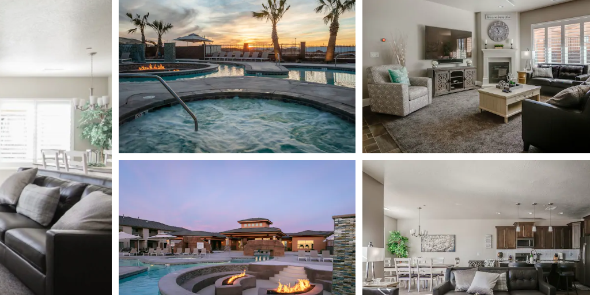

I just returned from a trip to Zion National Park in February 2021. Here are some tips that will help if you are considering a trip to Zion in the winter.
Housing
This is where we stayed and loved it. Very modern and close to Zion.
- Zion Village Resort on Airbnb in Hurricane, UT about 30mins from Zion Park
- Very nice modern 5 bedroom townhouse with all the amenities you’ll need, pots/pans, dishes, cutlery, etc. xbox, nintendo and right next to the clubhouse.
- Owners are personal friends of mine and are very nice people who care that your stay is perfect.
- Includes a clubhouse with:
- Pool, hot tub, lazy river, fire pit, bbq grills
- Billiards, foosball, and a nice small gym
Airbnb - Zion Village Poolside Villa | 5 bedrooms 16 guests - This is the poolside one we stayed at.
Airbnb - Zion Village Resort | Pool open! | 5 bdrm 16 guest - This is the one across the alley, also very close to pool.

Zion National Park

- Fees
- If you have a 4th or 5th grader, make sure you use the National Park free pass. They extended this offer to 5th graders this year.
- Shuttle
- When the shuttle is running, cars are not allowed on the scenic drive. We were there when the shuttle wasn’t running, so we just drove and parked.
- If the shuttle is running, then you need to park at the welcome center or in Silverdale and catch the shuttle to all of the trail stops.
- Parking
- Do not park on gravel. Park on pavement only. I saw cars with tickets for parking on gravel. Some of them only had one wheel on gravel, so be careful where you park.
- In February, we had no problem finding parking at any of the trails around 10am-2pm. But I still recommend you go early to get a spot. The ranger told us to get there at 7:30am, but we couldn’t get up that early. It was fine later in the day.
- Driving
- Definitely drive all the way up the scenic drive and stop at Upper emerald pond trail.
- Then drive to Canyon overlook trail
- Then drive out east through Zion to get some more sights.
- Hikes
- Amazing hikes of all levels. The mountains and views are breathtaking.
- Check this page: Zion Current Conditions for current status of all trails. A few were closed when we visited.
- Pa’rus Trail
- Nice easy trail around the welcome center, but not very interesting like the other trails on the scenic drive.
- Canyon Overlook Trail
- Nice drive up to the trail through winding roads through the middle of the park
- 1 mile tunnel. Stop or slow down at the few openings in the tunnel to have a peak at the mountains up close.
- Hike was very easy. Pregnant people and people in flip flops so you know it can’t be that hard.
- Upper Emerald Pond trail
- Nice central trail that we heard other folks say is the best trail in Zion. I haven’t been on all trails, but I agree that it was awesome.
- It was completely different than Canyon overlook. With Upper you are surrounded by mountains. With Canyon you walk the edge of a canyon. I recommend doing both.
- Hike was moderate with mixed gravel, some rocks and stairs, but we saw folks with flip flops again.
- Sinawava Trail - it is in the shadows, so about 10-20 degrees colder than other trails. It was too cold for us, so we didn’t do this hike.
Bryce National Park
- It’s a 2.5-3 hour drive from Hurricane to Bryce Canyon
- Not worth the trip from Hurricane, UT in February.
- Temps were too cold to stay out of the car for too long. It was 20 degrees with a strong cold wind
- The rim trail was closed. We only went to Bryce point for 5 mins and then headed back to Zion.
- In Feb, skip Bryce and spend more time in Zion.
Hope this helps you plan your trip to Zion.
Jon